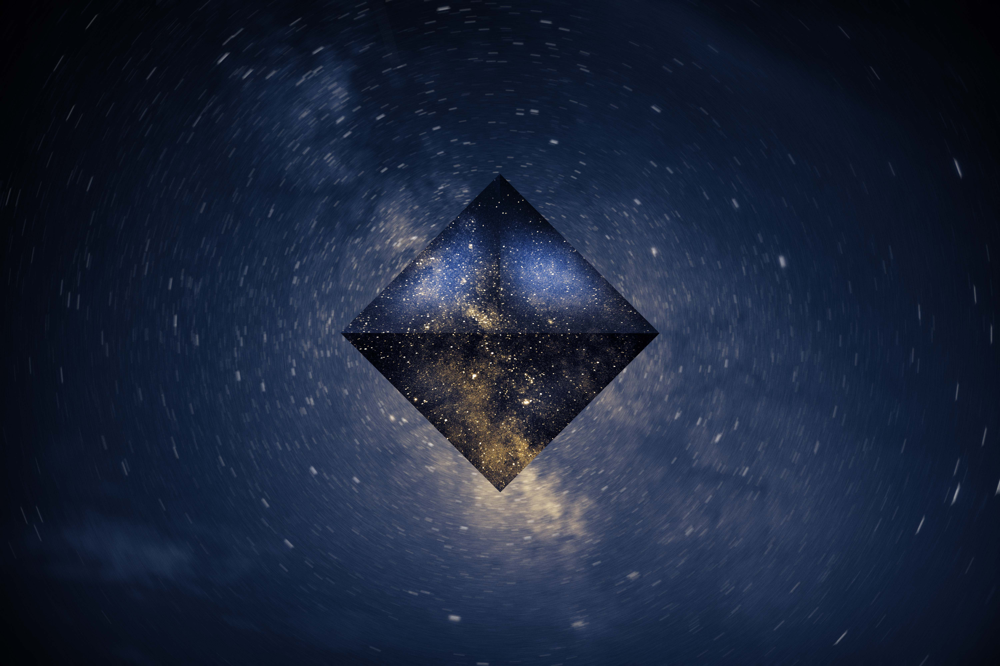

Stars
Cathy
2021-10-26
In this project, I wanted to create something based on the idea of the universe, and the movement of the universe itself vs. a static portion in the middle representing a stable and clear mind.
The background image is the other copy of the starry night image which I then applied the filter of “radial blur” to create the sense of the sky circulating.
Resources used: starry night